Here smallest means minimal total, and among those, minimal maximum vertex label.
| 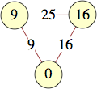 |
| 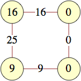 |
| 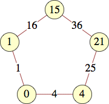 (Andrew Bayly) | 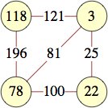 (Andrew Bayly) |
| 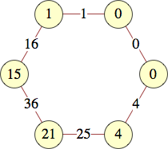 | 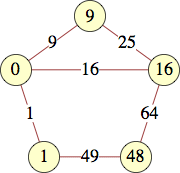 | 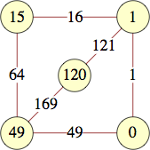 | 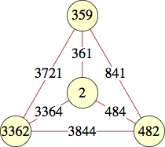 (Jon Palin) |
|
| 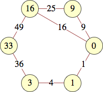 | 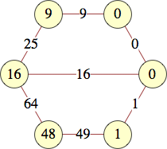 |
| 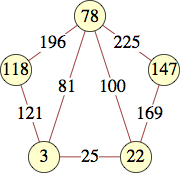 | 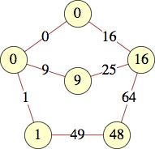 | 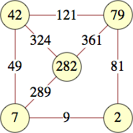 |
| 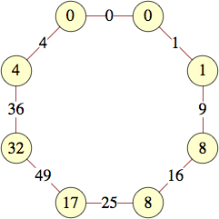 | 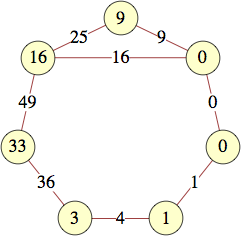 | 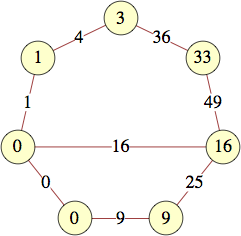 |
| 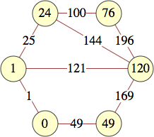 | 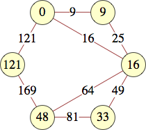 | 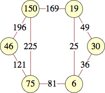 |
| 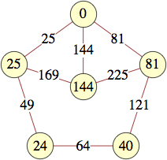 | 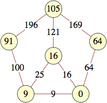 | 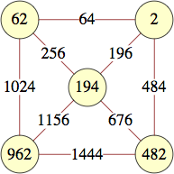 (Jon Palin) |
| 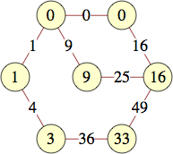 | 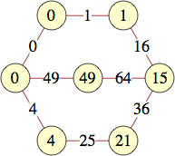 |
| 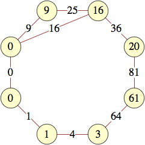 | 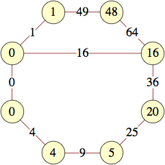 | 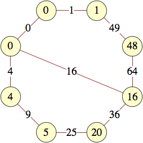 |
| 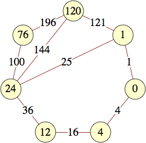 | 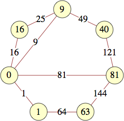 | 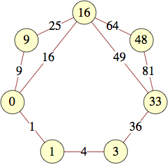 |
| 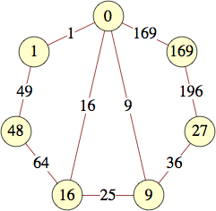 | 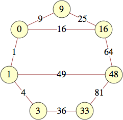 | 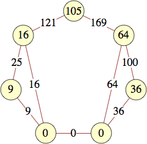 |
| 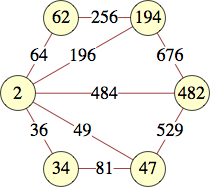 | 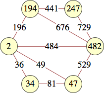 | 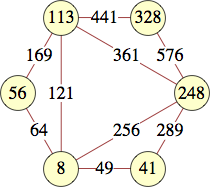 |
| 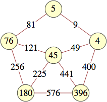 | 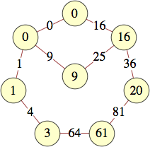 | 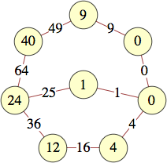 |

| 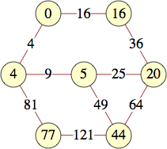 | 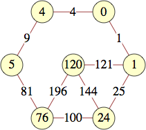 |
| 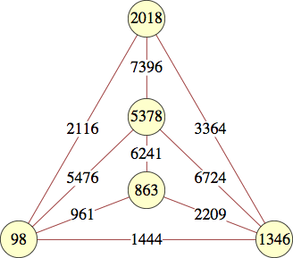 (Jon Palin) | 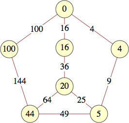 (George Sicherman) | 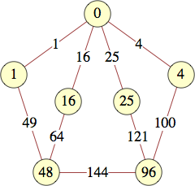 (George Sicherman) |
| 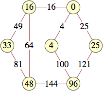 (George Sicherman) | 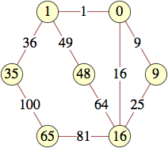 (George Sicherman) | 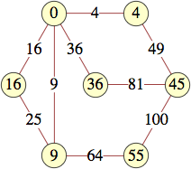 (George Sicherman) |
The smallest labels for cycles with n vertices are shown below:
| n | labels | author |
|---|---|---|
| 3 | 0, 9, 16 | |
| 4 | 0, 0, 9, 16 | |
| 5 | 0, 1, 15, 21, 4 | Andrew Bayly |
| 6 | 0, 0, 1, 15, 21, 4 | |
| 7 | 0, 0, 1, 3, 22, 27, 9 | |
| 8 | 0, 0, 1, 8, 8, 17, 32, 4 | |
| 9 | 0, 0, 1, 8, 8, 17, 32, 32, 4 | George Sicherman |
| 10 | 0, 0, 1, 8, 28, 21, 60, 61, 39, 25 | George Sicherman |
| 11 | 0, 0, 1, 8, 8, 28, 21, 60, 61, 39, 25 | George Sicherman |
| 12 | 0, 0, 1, 3, 6, 43, 38, 62, 59, 5, 11, 25 | George Sicherman |
| 13 | 0, 0, 1, 3, 6, 10, 39, 61, 3, 22, 59, 85, 36 | George Sicherman |
| 14 | 0, 0, 1, 3, 13, 51, 49, 32, 4, 5, 20, 101, 95, 49 | George Sicherman |
| 15 | 0, 0, 1, 3, 6, 10, 26, 38, 11, 14, 67, 33, 88, 56, 169 | George Sicherman |
| 16 | 0, 0, 1, 3, 6, 10, 111, 58, 6, 19, 17, 83, 113, 112, 32, 49 | Alex Rower |
| 17 | 0, 0, 1, 3, 6, 10, 26, 55, 9, 16, 128, 128, 41, 8, 92, 104, 121 | Alex Rower |
| 18 | 0, 0, 1, 3, 6, 10, 15, 34, 2, 62, 19, 81, 63, 162, 162, 34, 135, 121 | Alex Rower |
The smallest labels for wheels with n vertices are shown below:
| n | center | others | author |
|---|---|---|---|
| 4 | 2 | 3362, 359, 482 | Jon Palin |
| 5 | 194 | 962, 62, 2, 482 | Jon Palin |
| 6 | 224 | 1712, 137, 32, 452, 2912 | Jon Palin |
| 7 | 144 | 3456, 25, 0, 256, 585, 640 | Jon Palin |
| 8 | 144 | 880, 81, 0, 256, 585, 5040, 7956 | Jon Palin |
| 9 | 260 | 701, 140, 29, 1340, 2141, 6140, 101, 524 | Jon Palin |
| 10 | 482 | 962, 194, 2, 47, 1634, 1282, 9122, 3874, 887 | Jon Palin |
| 11 | 212 | 364, 77, 44, 317, 2492, 1997, 1724, 877, 3884, 1157 | Jon Palin |
| 12 | 8 | 136, 188, 1928, 281, 248, 3473, 1288, 5768, 161, 568, 953 | George Sicherman |
The smallest labels for n-dimensional cubes are shown below:
| n | labels | author |
|---|---|---|
| 2 | 0, 0, 9, 16 | |
| 3 | 0, 0, 9, 16, 153, 72, 49, 576 | George Sicherman |
The smallest labels for complete graphs on n vertices are shown below:
| n | labels | author |
|---|---|---|
| 3 | 0, 9, 16 | |
| 4 | 2, 359, 482, 3362 | Jon Palin |
| 5 | 7442, 28658, 148583, 177458, 763442 | Jean-Louis Nicolas |
In 2019, Alex Rower found these grid graphs, prism graphs, and complete bipartite graphs:
| m \ n | 2 | 3 | 4 | 5 |
|---|---|---|---|---|
| 2 | 0 0 9 16 | |||
| 3 | 0 9 0 16 1 48 | 15 1 224 49 0 100 32 4 21 | ||
| 4 | 0 9 0 16 1 48 3 33 | 15 1 360 49 0 169 72 9 27 184 216 73 | 96 48 1 224 345 16 0 100 280 9 0 576 681 160 36 448 | |
| 5 | 3 33 1 48 0 16 0 9 121 135 | 1 24 552 168 57 232 561 64 297 400 0 144 84 16 180 | 0 1296 385 291 0 225 99 70 121 504 1345 1155 75 25 24 1 825 264 760 840 | 0 0 1 24 1201
576 49 120 76 824 385 15 241 600 2425 1215 1921 288 1081 75 306 783 1 2400 409 |
| n | labels |
|---|---|
| 3 | 12 52 69 157 204 372 |
| 4 | 0 0 9 16 576 49 72 153 |
| 5 | 0 4 12 13 36 324 252 109 516 160 |
| 6 | 0 4 96 48 33 16
64 152 433 528 256 105 |
| m \ n | 2 | 3 | 4 |
|---|---|---|---|
| 2 | 0 9 0 16 | ||
| 3 | 1 49 0 15 120 | 0 273 768 16 256 1936 | |
| 4 | 0 144 0 25 81 256 | 1 961 6241 0 483 1155 13923 | ? |
Alex Rower also found cycle and grid graphs for triangular, pentagonal, hexagonal, and octagonal numbers.
If you can extend any of these results, please e-mail me. Click here to go back to Math Magic. Last updated 4/1/19.